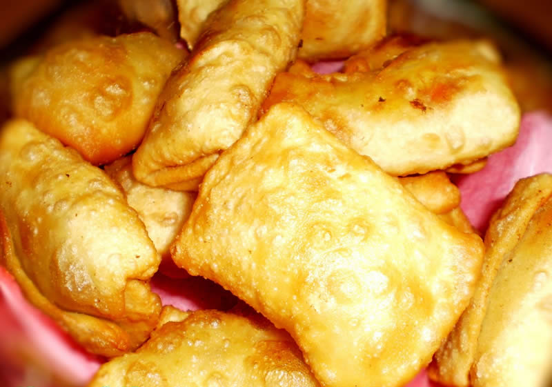
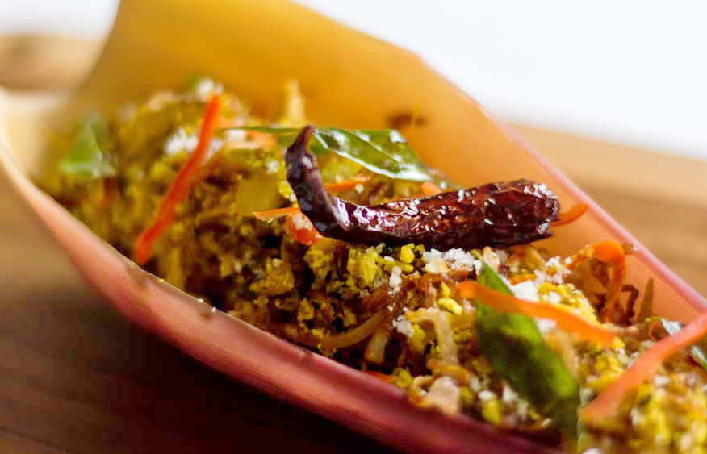
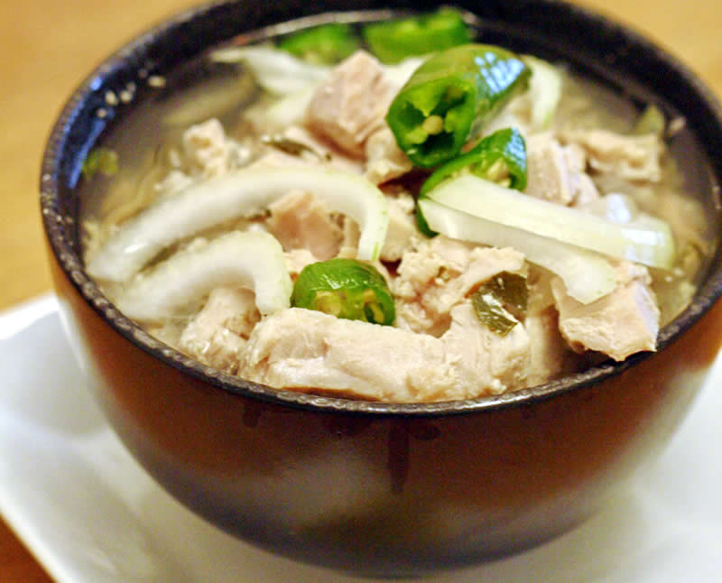
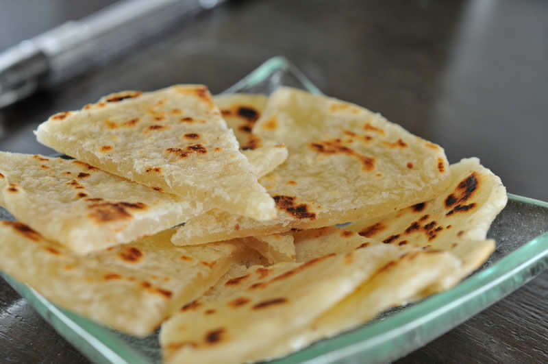
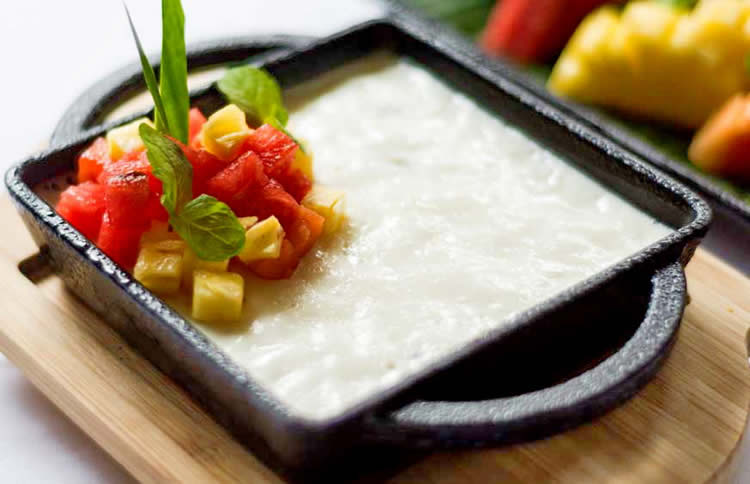
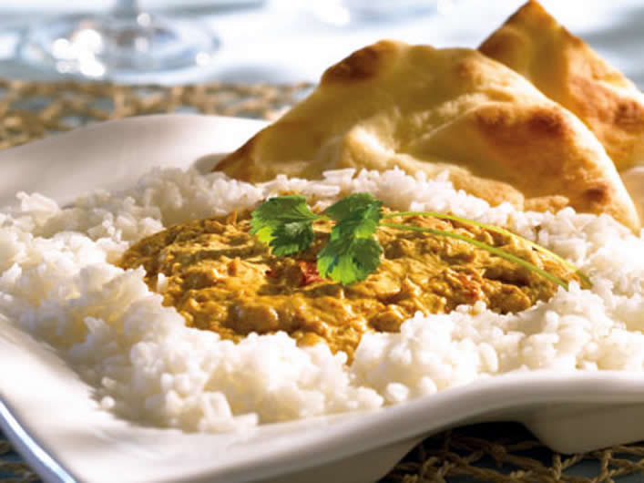
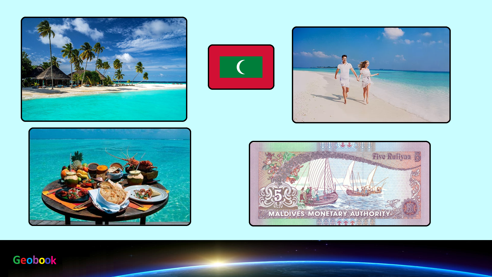

×

Maldives
____
Традиционная еда
Bis Keemiya (Самса) — Представьте себе слойку карри в браке с самоса и роллами, и вы на полпути к тому, что такое Bis Keemiya. Мягко обжаренная, с начинкой из рубленной капусты, тунца, яйца с твердым сыром и острым луком, выпечка светлая и шелушащаяся, и восхитительное жевание. Сохраняя верность своим острым и соленым истокам, это блюдо снова демонстрирует основы мальдивской кухни, с тем, как оно дает тунцу передний план.

Boshi Mashuni (Салат из цветков банана) — Где-то между салатом и сальсой, boshi mashuni - смесь измельченных, бланшированных (но все еще хрустящих) банановых цветов, свежего кокоса и специй. Это блюдо особено потрясно с лаймом, остро с луком и мальдивскими чили (вы можете, конечно, использовать обычные чили, просто убедитесь, что они острые, как птичьи глаза), с пикантным фоном благодаря листьям карри, куркуме и тмину.

Garudhiya (ароматный рыбный суп) — Если вы поклонник мисо или даши, вам обязательно нужно попробовать этот рецепт. Аппетитный традиционный мальдивский рыбный суп, сварен со специями и цитрусовыми. Свежий тунец является основным ингредиентом, обеспечивая при этом важный вкус для супа.

Хуни Роши (хлеб чапати) — Учитывая близость архипелага к Шри-Ланке, где pol roti является основным продуктом, совсем не удивительно, что у Мальдивов есть своя версия кокосового хлеба. Huni roshi - это плоские хлебцы, покрытые кокосовой стружкой, которые жарят до хрустящего снаружи, и мягкие и жевательные внутри (они даже могут раздуваться, как pitta, когда вы их жарите).

Saagu Bondibai (саго пудинг) — на Мальдивах эти маленькие крахмалистые шарики являются основным компонентом народных диет, происходя из губчатых сердец тропических пальмовых стеблей. Как только вы попробуете saagu bondibai, вы поймете, почему саго все еще так популярен на мальдивских кухнях. Согретый кокосовым молоком, кардамоном и розой и заправленный сливочным сгущенным молоком, это тот десерт, который можно уплетать в большом количестве на завтрак, обед и ужин.

Banbukeylu Harisa (хлебный карри) — Хлебный плод растет в тропическом климате и представляет собой богатый и ароматизированный продукт, которым можно наслаждаться как карри или в качестве десерта. Сытный и питательный вкус этих плодов можно легко открыть, как только вы преодолеете липкую задачу (в буквальном смысле) его очистки.

____
